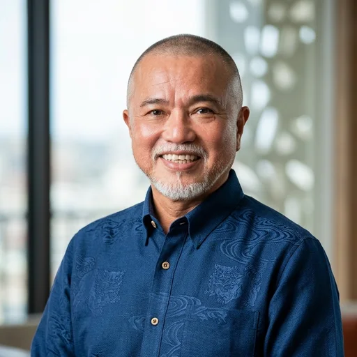

OKINAWA KIGYO NO MIKATA
——私たちGLOWも、その一社です。
補助金・助成金は、可能性を起こすきっかけのひとつ。
GLOWが365日、国・県・市町村の公募情報を
チェックし、あなたに届けます。
📡 毎日自動更新中|現在の掲載 — 件
⚡ 30秒診断で、使える可能性のある補助金と金額の目安を見る(無料・会社名の入力なし)THE REALITY
OUR VISION
WHY FREE ?
情報の差だけで会社の未来が変わるのは、もったいない。だから情報は無料で、毎日、全部確認できます。
これも本音です。登録企業が増えるほど、この島の経営者同士で情報を交換できる場になります。
これからになりますが、対応頂ける専門家様の掲載料と、ご希望の方への経営相談で運営していきます。登録企業様から利用料をいただくことはありません。
HOW IT WORKS
jGrantsや県・市町村サイトを毎日確認。見落としがちな更新も漏らしません。
すべての情報は公式ページと突き合わせて掲載。あいまいなものは「要確認」と正直に表示します。
締切の約1か月前からお知らせします。書類やgBizIDの準備が間に合う時期にお伝えするのが、私たちの役目です。
FREE MATCHING
4つ選ぶだけ。登録不要・無料で、最新データから自動で診断します。
選択 0/4 — 1つでも選ぶと精度が上がります
登録・会社名の入力は不要。結果までそのまま見られます。
※LINE登録済みの方の診断内容は、制度のご案内・締切アラート・関連サービスのご案内のため非公開で管理します。
まだ何も選ばれていません 😊 どれか1つだけでも選ぶと、貴社に近い制度に絞ってお探しできます。
表示中の制度の「上限額」をすべて足した場合の最大額(理論値です)
最大 —
※各制度が公表している公募上限額を単純に合計した理論値です。受給できる金額や採択を保証するものではありません。要件・金額は必ず各制度の原文でご確認ください。
この可能性を無料で確認する(LINE)診断結果 件
締切アラート(約1か月前から)を受け取るには、LINE登録(無料)をどうぞ。
約30秒で完了。下のボタンを押すとLINEアプリが開き、入力内容が書き込まれたメッセージが用意されます。あとはLINE側の送信ボタンを押すだけです。
3項目すべてご入力ください😊
※入力内容はLINEのメッセージにセットされるだけで、このサイトには保存されません。
「ちょっと聞いてみたい」で大丈夫です
※申請の代行は行っていません。準備の進め方のご案内と、状況に合う専門家のご紹介までお手伝いします。
この制度の申請、誰に相談する?
沖縄の信頼できる専門家を、各分野3名まで厳選してご紹介予定です。
得意分野: 補助金申請サポート(採択後の交付申請〜実績報告まで伴走)
中小企業診断士・行政書士・税理士が在籍
※掲載調整中(正式掲載の準備中です)
LINEで相談内容を送る※ご相談は運営(GLOW)のLINEで承り、内容に合わせて専門家へお取り次ぎします。
補助金申請・許認可に強い専門家を選定中です
顧問の先生はそのまま。補助金だけのセカンドオピニオン
専門家の方へ: 掲載のご相談はLINEよりお問い合わせください。
国の補助金(jGrants)の申請には、多くの場合「GビズIDプライム」が必要です。取り方によって、かかる時間がまったく違います。
※ gBizIDが必要かどうかは制度によって異なります。沖縄県・市町村・産業振興公社などの制度は独自の申請方法の場合があります。必ず各制度の公募要領でご確認ください。
※ 上記はGビズID公式サイトの記載に基づく情報です(最新の内容は公式サイトでご確認ください)。
データ最終更新:—(1日4回自動更新)
「何に使いたいか」から、いま募集中の制度を一覧できます(毎日更新)。
どのテーマか迷ったら → 経営者タイプ診断(16タイプ・約1分)
START FREE
気になる公募は、締切の約1か月前からLINEでお知らせします。
LINEで無料登録する登録は10秒。いつでも解除できます。
ABOUT US
沖縄の企業と経営者に寄り添う、「沖縄企業のミカタ」
株式会社GLOWは、沖縄に根ざした企業支援会社として、県内の企業や事業者の皆さまが抱えるさまざまなお悩みを、一緒に考え、解決へ向けてサポートしています。
こうした経営上のお悩みに加え、会社に活用できる補助金・助成金などの制度がないかを確認し、必要な支援へつなげることも私たちの役割です。一つひとつのお悩みに寄り添いながら、必要に応じて行政、金融機関、税理士などの専門家とも連携し、それぞれの会社に合った解決方法をご提案します。
沖縄で事業を営む皆さまにとって、「何かあったら、
まずは相談してみよう」と思っていただける身近な存在でありたい。株式会社GLOWは、沖縄の企業と経営者に寄り添う「沖縄企業のミカタ」として、
企業の成長と地域経済の発展を支えてまいります。
REPRESENTATIVE

沖縄振興開発金融公庫に34年間在籍し、創業支援、事業再生、事業承継、大型プロジェクトファイナンスなど幅広い企業支援業務に従事。地域経済を支える数多くの企業・プロジェクトを支援してきました。
離島振興、大型ホテルプロジェクト、大型エネルギープロジェクトなど、沖縄の発展を支える大型案件をはじめ、創業支援から事業再生、事業承継まで、企業のライフステージに応じた幅広い支援を担当。経営者が迷い、決断を迫られる局面では、資金調達だけでなく、その先の成長を見据えた伴走支援を信条としてきました。
代表的な支援事例として、現在では世界13カ国・約600店舗以上を展開するアイウェアブランド「OWNDAYS株式会社」の海外展開資金の融資を担当。当時、多くの金融機関が同社への融資に慎重な判断をする中、事業の将来性を評価し海外展開を支援しました。同社会長・田中修治氏は講演や著書の中で、「沖縄公庫の嶺井さんが可能性を信じてくれた」と当時の支援について紹介しています。
現在は株式会社GLOWにて、34年間で培った企業支援の経験と行政・金融機関・士業との幅広いネットワークを活かし、M&A・事業承継をはじめとする経営課題に応じた最適な専門家・支援機関との橋渡しを担っています。「経営者が最初に相談するパートナー」として、一社一社に寄り添い、企業の持続的な成長と円滑な事業承継を支えています。
TRACK RECORD
※沖縄振興開発金融公庫在職中の実績を含みます。
COMPANY